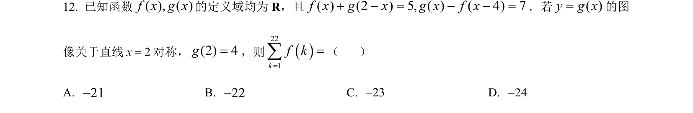
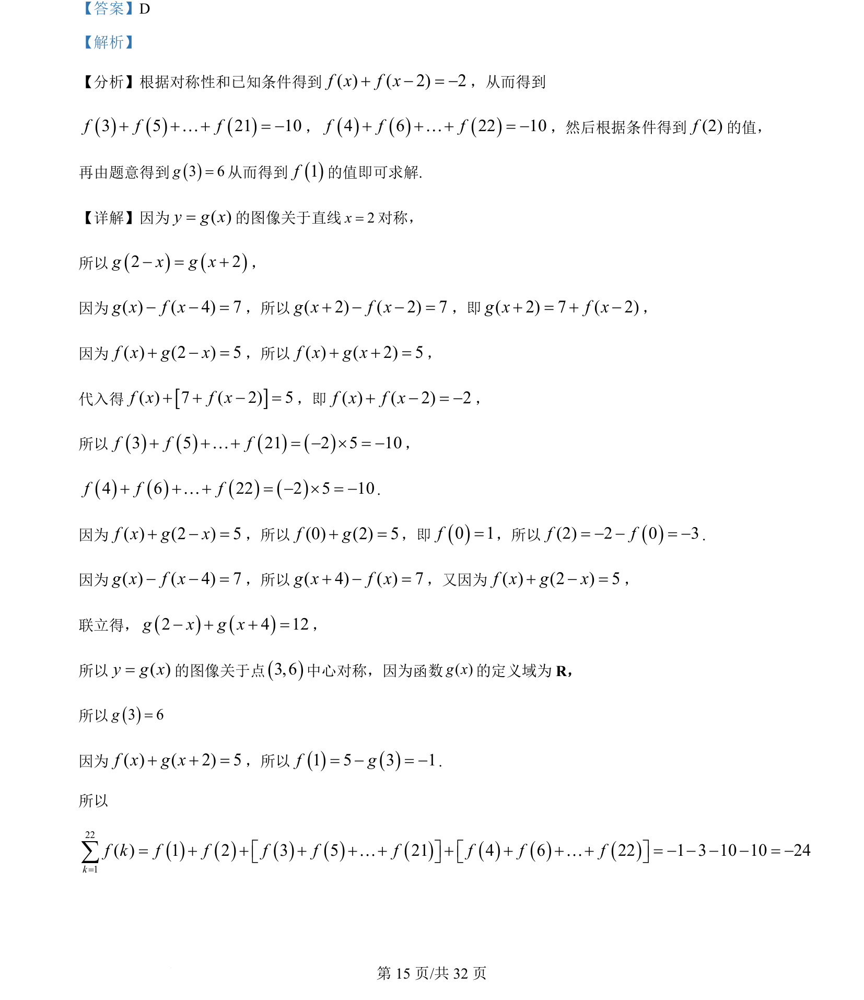
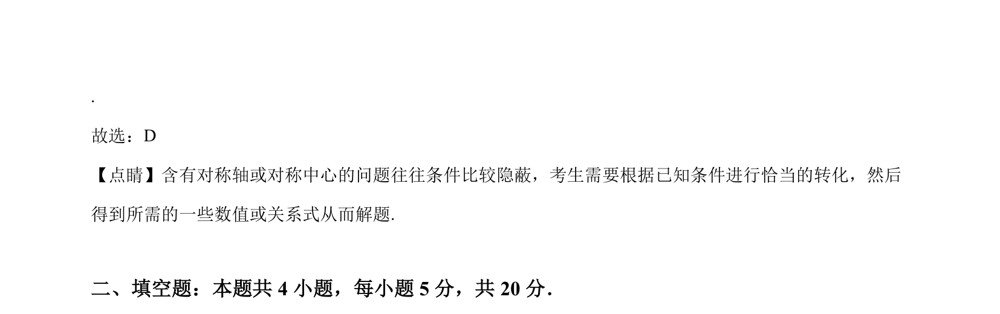

考点：函数对称性 抽象函数 代数变换 求值

利用函数对称性和方程关系，通过代换与求和求函数值。


📄 原 PDF 第 15 页：
素材/真题/吉林/2008-2024·（吉林）数学高考真题/2022年高考数学试卷（理）（全国乙卷）（解析卷）.pdf
【答案】D 【解析】 【分析】根据对称性和已知条件得到( ) ( 2) 2f x f x+ - = -，从而得到 3 5 21 10f f f+ + + = -K，4 6 22 10f f f+ + + = -K，然后根据条件得到(2)f的值， 再由题意得到3 6g=从而得到1f的值即可求解. 【详解】因为( )y g x=的图像关于直线2x=对称， 所以2 2g x g x- = +， 因为( ) ( 4) 7g x f x- - =，所以( 2) ( 2) 7g x f x+ - - =，即( 2) 7 ( 2)g x f x+ = + -， 因为( ) (2 ) 5f x g x+ - =，所以( ) ( 2) 5f x g x+ + =， 代入得( ) 7 ( 2) 5f x f x+ + - =，即( ) ( 2) 2f x f x+ - = -， 所以3 5 21 2 5 10f f f+ + + = - ´ = -K， 4 6 22 2 5 10f f f+ + + = - ´ = -K. 因为( ) (2 ) 5f x g x+ - =，所以(0) (2) 5f g+ =，即0 1f=，所以 (2) 2 0 3f f= - - = -. 因为( ) ( 4) 7g x f x- - =，所以( 4) ( ) 7g x f x+ - =，又因为( ) (2 ) 5f x g x+ - =， 联立得，2 4 12g x g x- + + =， 所以( )y g x=的图像关于点3,6中心对称，因为函数( )g x的定义域为 R， 所以3 6g= 因为( ) ( 2) 5f x g x+ + =，所以1 5 3 1f g= - = -. 所以 2211 2 3 5 21 4 6 22 1 3 10 10 24( )kf f f f f f f ff k=+ + + + + + + + + = - - - - = -é ù é ùë û ë û=åK K